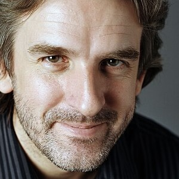
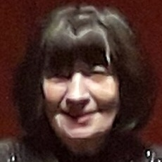
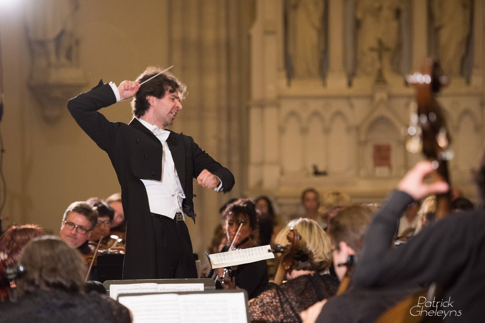
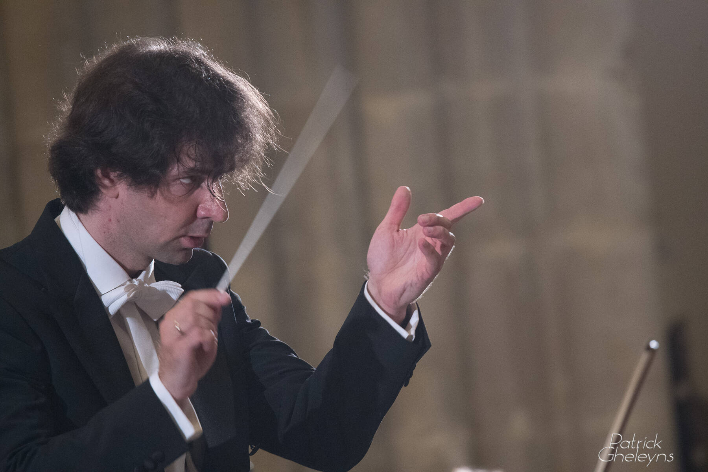
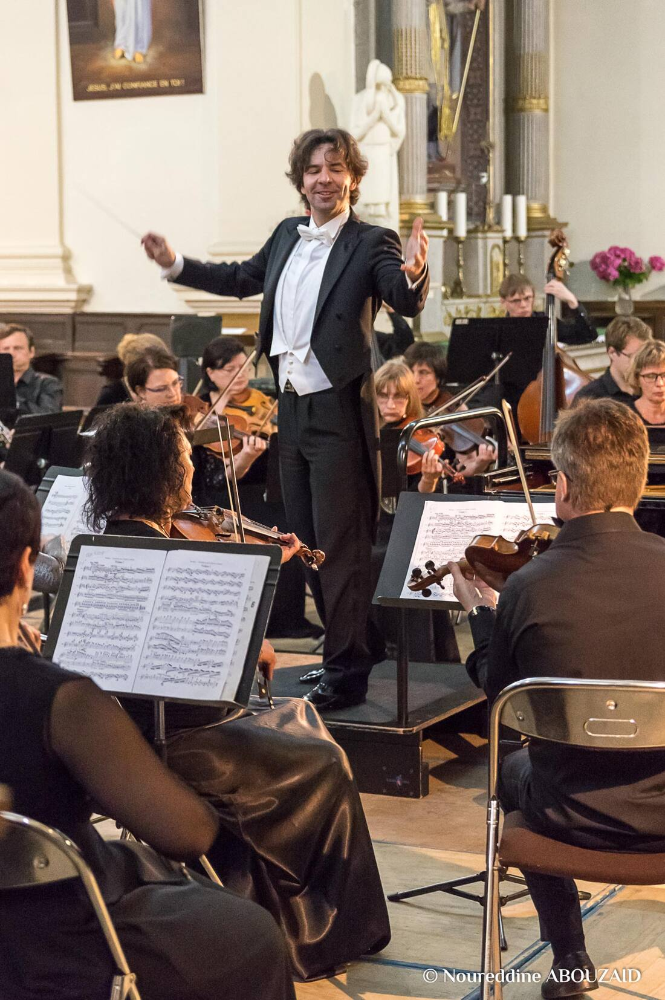

«Reconnect with what matters»Георгий Громов
Свою миссию я вижу в том, чтобы способствовать развитию людей. Помочь людям понять себя, прочувствовать свою уникальность, а также научиться видеть, чувствовать и проживать эту жизнь глубже.
Единая цель – соединиться с чем-то большим, чем мы сами. А пути три:
Через искусство
Как за роялем, так и за дирижёрским пультом, мне важно, чтобы исполнение было не про меня. Мне хочется, чтобы люди после концерта не говорили обо мне, а вместо этого поняли что-то гораздо более важное о самих себе и о жизни.
В последние несколько лет я значительно снизил количество выступлений именно для того, чтобы выходить на сцену тогда, когда есть что-то важное, что я хотел бы сказать. Чтобы слушание музыки было не развлечением, а становилось опытом проживания.
Подробнее →Через коучинг
Коучинг в понимании International Coaching Federation, будь то развитие компании, её лидера, команды или одного человека, призван помогать находить независимые ни от чего ресурсы для роста. Здесь, как и в музыке, важно уметь слышать весь ансамбль голосов – в том числе и скрытых.
Подробнее →Через просветительство
Иногда загвоздка не в том, что мы не задаёмся нужными вопросами, а в том, что мы пока не нашли ключик к пониманию некоторых жизненных аспектов. Поэтому я считаю важным делиться квинтэссенцией того, что удалось понять самому в искусстве и в жизни.
Неотъемлемой частью моей жизни и деятельности является просветительство – через лекции, через онлайн-встречи, через тренинги. Жизнь одна – и мне важно качество, на котором её проживают люди, которые попадают в наше поле.
Подробнее →Музыкант
«Его исполнение всегда показывает собственное отношение к музыке, основанное на глубокой эрудиции, чуткости и поэзии.»Николай Луганскийпобедитель Конкурса имени Чайковского

«Меня глубоко впечатлили сильная музыкальность и искренность пианизма Георгия. За этим талантом стоит следить.»Барри Дугласпобедитель Конкурса имени Чайковского

«Один из самых одарённых молодых российских пианистов. Меня лично очень впечатляет его глубокий, многогранный талант.»Элисо Вирсаладзепрофессор Московской консерватории, лауреат Конкурса имени Чайковского
Георгий Громов – пианист и дирижёр, победитель двенадцати международных конкурсов. Он выступал в Тонхалле Цюриха, Большом зале Московской консерватории, Seoul Arts Centre и Концертхаусе Берлина, на фестивалях в Вербье и Klavier-Festival Ruhr.
Училище имени Гнесиных он окончил с отличием сразу по трём специальностям: фортепиано, композиция и дирижирование. В Московской консерватории учился в классе Элисо Вирсаладзе, затем совершенствовался у Клауса Хельвига в Берлинском университете искусств. В Германии живёт с 2010 года.
Его репертуар держится на классике и романтизме, и он любит большие циклы. В 2011 году Громов исполнил все 32 сонаты Бетховена, все его фортепианные концерты, все сонаты для скрипки и для виолончели. В 2015-м – все 27 концертов Моцарта, в 2018-м – все концерты Рахманинова. Сегодня в его репертуаре больше 80 сольных программ и больше 50 концертов с оркестром.
Среди наград – Гран-при Prix d'Oslo на Международном конкурсе пианистов имени Грига вместе с премией EPTA, премией имени С. Франка и призом публики, Гран-при Международного музыкального конкурса в Сеуле, первые премии конкурсов имени Шумана и Марии Голиа в Италии.
Как солист он играл с оркестром «Новая Россия» Юрия Башмета, Литовским камерным оркестром под управлением Саулюса Сондецкиса, Цюрихским камерным оркестром и симфоническим оркестром KBS. В 2018–2020 годах был художественным руководителем и главным дирижёром Оренбургской филармонии.
В последние годы он выходит на сцену реже и только с теми программами, в которых ему есть что сказать. В Берлине играет в Piano Salon Christophori, в том числе в дуэте с пианисткой Марией Масычевой: в четыре руки и на двух роялях.
 За пультом
За пультом
Концерт с оркестром

 Перед концертом
Перед концертом«Громов играет Бетховена так, как его и нужно играть: сильно, со страстью, но прежде всего в настоящем бетховенском духе.»livekritik.deо сонате «Буря»
«Захватывает публику с первых звуков и ясно ведёт её за своим замыслом. Его виртуозность не знает границ, а напряжение держится до самого конца.»
«Один из самых многообещающих пианистов нашего времени: блестящий технически, безупречный музыкально, с глубоким и подлинным пониманием исполняемой музыки.»
livekritik.de, рецензии с разных концертовМузыка на заказ
Георгий Громов пишет музыку для разных составов, в том числе для оркестра. Отдельная часть этой работы – сочинения на заказ для людей и компаний: в мелодию зашифрованы имена, важные даты, ценности, история. Слушателю музыка кажется простой и естественной, а для заказчика она остаётся только его.
Так появилась пьеса для оркестра о французской семье Маршан, о семи годах разлуки и встрече: тема отца построена на его имени, тема матери звучит у валторны, даты спрятаны в партитуре. Так пишутся и гимны организаций.
«Это точно мои дети!»сказала жена заказчика, услышав пьесу о своих детях
Коуч
Оркестр отвечает на жест мгновенно и совершенно честно. Поэтому на мастер-классе руководители не слушают теорию о лидерстве, а встают за пульт перед живым оркестром.
Георгий Громов – профессиональный executive и командный коуч уровня PCC ICF. С 2023 года он член совета Федерации профессиональных менторов и коучей и руководит её международным направлением. В 2024 году стал лауреатом премии «Топ-3 executive-коучей».
Первый день мастер-класса посвящён невербальному лидерству: как жест, взгляд и дыхание собирают команду. На второй день участники работают с настоящим оркестром и быстро понимают, что музыканты идут не за громкостью, а за ясностью намерения.
Коучинг он приносит и в консерватории: учит профессоров и студентов задавать вопрос вместо готового совета.
- Стили лидерства на примере великих дирижёровДва дня. Невербальное лидерство и синхронизация команды, затем работа с живым оркестром.
- Симфония как высшее проявление жизниСонатная форма как модель человеческой жизни: экспозиция, разработка, реприза.
- Личная стратегияОнлайн и офлайн тренинг: цели на год, три и пять лет и путь к ним. Ведут вдвоём с Марией Масычевой.
- Программы для руководителей и их командКомандный и индивидуальный коучинг, стратегические сессии.
- Методы коучинга в музыкальном образованииДля профессоров и студентов консерваторий.

«Вы гениально мягко […] погрузили меня через искусство оркестра в искусство коучинга.»Светланаучастница вебинара Федерации профессиональных менторов и коучей
«Когда начала слушать, в голове не было ни одной цели. […] И вдруг!!! У меня возникла такая шикарная цель, что её хватит надолго! Ура!»Людмиламастер-класс «Личная стратегия», 2025
«Много внутренней работы, прямо расшевелили, пробудили. Оказывается, внутри меня много ресурсов и многое возможно!»Айгульмастер-класс «Личная стратегия», 2024
«Ухожу с метафорой: слушать клиента как слушать смыслы симфонии.»Аннавебинар для коучей, Федерация профессиональных менторов и коучей
«Мне кажется, в каждом из нас ответы уже были. Но вы сегодня помогли нам эти ответы вверх поднять, на поверхность.»Татьянамастер-класс «Личная стратегия»
«Самое ценное, что в человеке все его и страхи, и конфликты – это часть общей гармонии.»Катеринавебинар для коучей, Федерация профессиональных менторов и коучей
«После вашего выступления просто ты понимаешь, что ты можешь работать с абсолютно любой аудиторией, и самое главное, ты можешь делать это от сердца.»Алёнао выступлении на конференции
Просветитель
Ко мне приходят с одной и той же фразой: «я всю жизнь слушаю это произведение и не слышу его». Дело не в нехватке образования. Просто никто не показал, куда смотреть.
В 2015 году Георгий Громов основал собственную музыкальную академию. Сегодня у него 16 обучающих программ: для ценителей музыки, для композиторов, для руководителей и их команд. «12 музыкальных шедевров» идут уже третий сезон: одна лекция в месяц и месяц подготовки к каждому произведению.
Он не пересказывает биографии композиторов и не упрощает музыку ради доступности. Он показывает, из чего вещь сделана, а дальше человек слышит сам. Встречи идут по четыре и по пять часов, и до конца остаются почти все.
- Как слушать музыкудля ценителей музыки · русский, английский, немецкий
- 12 музыкальных шедевроводно произведение в месяц, третий сезон · русский, английский, немецкий
- Прикладная теория музыки для композиторовонлайн
- Элементарная гармония для композиторовмастерский курс, онлайн
- май 2026Мастер-класс для дирижёров, Advanced Professional Training for ConductorsUniversität der Künste Berlin
- октябрь 2025Executive Coaching and Mentoring DayШкола управления СКОЛКОВО
- июнь 2025Методы коучинга в музыкальном образованииКонсерватория имени Масканьи, Ливорно
- февраль 2025Мастер-класс «Спиральная динамика», программа Executive MBAШкола управления СКОЛКОВО
«К концу каждой лекции ощущаю себя обновлённой, обнаруживаю себя в мире, где много того, что я, оказывается, любила, но не понимала этого.»Галинакурс «Как слушать музыку»
«Это одно из моих любимых произведений, в одно время слушала дни напролёт. Сегодня поняла, что слышала его, а не слушала – и то, в четверть уха.»Айгуль«12 музыкальных шедевров», Шопен
«Чувство такое, будто вы учите нас летать. Казалось бы, это невозможно, но вот оно, ощущение полёта в безбрежном море Природы и Красоты!»Иннакурс «Как слушать музыку»
«С Георгием прослушивание превращается в проживание. […] Наши довольно длинные онлайн-встречи всегда заканчиваются лёгкой грустью: как? уже всё? давайте ещё поговорим!»Ирина«12 музыкальных шедевров»
«Сегодня Дворжака слушала и с радостью обратила внимание, что ДА! моё слушание уже! изменилось!»Еленакурс «Как слушать музыку»
«Буквально вчера мы слушали вашу лекцию об этом великом композиторе. И я даже не ожидала, что сегодня буду плакать на концерте от услышанного. Мне казалось, что я сама пережила и переживаю всё то, что отразил Шостакович в своей музыке.»Участница курса«Как слушать музыку», после концерта Шостаковича
«Та удивительная деликатность, с которой Георгий без малейшего нажима ведёт свою аудиторию к намеченным целям и удивительным образом их достигает. […] Приходите, Георгий научит.»Слушательница курсапреподаватель, «Как слушать музыку»
Четыре дня вокруг одного спектакля
Несколько раз в год Георгий и Мария Масычева увозят небольшую группу на четыре-пять дней: Прага, Вена, Флоренция. В центре поездки один спектакль или фестиваль, вокруг него лекции, прогулки и долгие разговоры за столом. Группа маленькая намеренно.
Поездки сезона 2026/27 →Летняя академия в Тоскане
Classica Viva Academy: десять дней на старой вилле в Тоскане для профессиональных музыкантов и для тех, кто просто любит музыку. Уроки и мастер-классы, разговоры о сценическом волнении и присутствии на сцене, вечерний круг, где все обсуждают прожитый день, общие ужины преподавателей и участников и концерты, в которых играют все.
«Это было самое прекрасное, что случилось со мной в жизни. Это были не просто фортепианные курсы, а десять дней, полных вдохновения, творчества, искусства, жарких споров, открытого общения, неожиданных открытий и, конечно, музыки и любви.»Соняучастница академии · перевод с английского
«Это лето стало моим возвращением к классической музыке. […] Там у меня было чувство, что я вернулась к своей настоящей природе, к своей душе. Я была счастлива, как ребёнок.»Валериямузыкант-любитель · перевод с английского
«Атмосфера была очень тёплой и принимающей. Мы все были равны, все друг другу нравились, и в конце все стали друзьями.»Сараскрипачка, Франция, академия 2019 · перевод с английского
Расписание
Сезон – это первая тема «Маленькой ночной серенады» Моцарта, каждая нота – одно событие. Выберите сезон и наведите курсор на ноту.
- 18 декабря 2026«12 музыкальных шедевров»: Чайковский, «Евгений Онегин»онлайн
- 8 января 2027«12 музыкальных шедевров»: Шопен, четыре балладыонлайн
- 21 января 2027Особенный концерт: «Вокруг Рахманинова»Piano Salon Christophori, Берлин
- 29 января 2027«12 музыкальных шедевров»: Шуман, «Карнавал»онлайн
- 5 февраля 2027Рахманинов и вокруг него: дуэтный концертМосковский международный Дом музыки
- 19 февраля 2027«12 музыкальных шедевров»: Мусоргский, «Картинки с выставки»онлайн
Контакт
Концерт, лекция, мастер-класс с живым оркестром или формат, которого ещё нет. Отвечаю сам, на русском, немецком, английском, французском или итальянском.
georgy.gromov@gmail.com